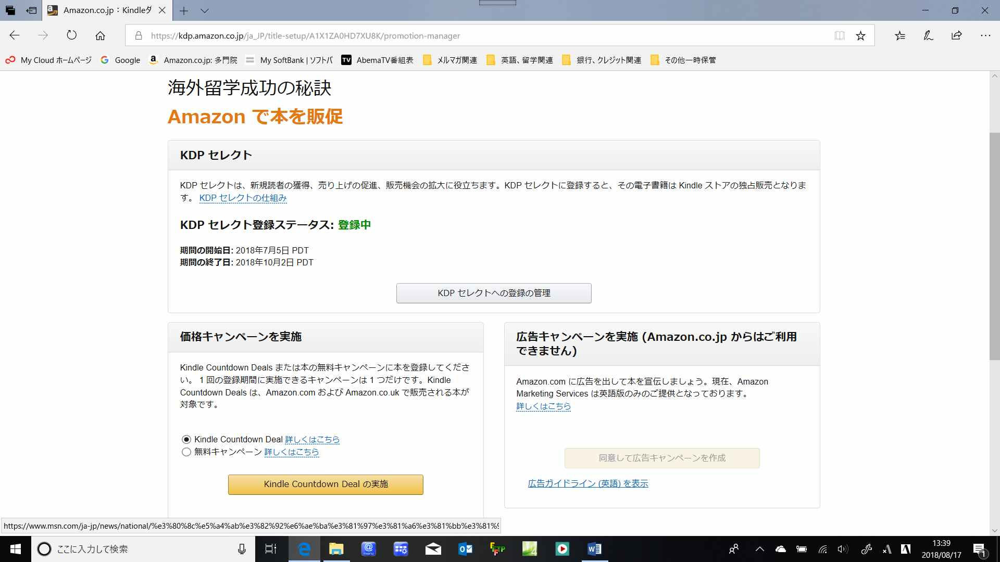
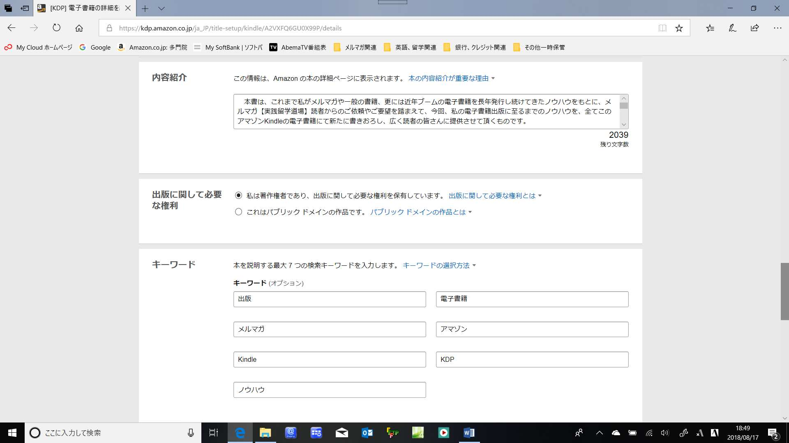
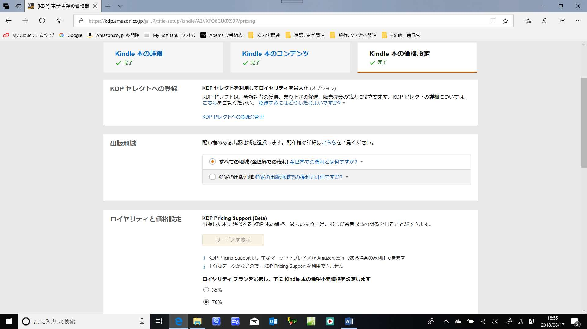

| あなたも分かる電子書籍出版の全て 【後編】: ～ アマゾンKDPでの出版＆拡販ノウハウ ～ | |
| 多門院 英蔵 | |
| Office of Practical Studying Abroad Mail Magazine (2018) | |
=== メルマガ【実践留学道場】オリジナル電子書籍 ===
あなたも分かる電子書籍出版の全て
【後編】
～ アマゾンKDPでの出版＆拡販ノウハウ ～
===================================================
編著・メルマガ【実践留学道場】道場主
多門院 英蔵
２０１８年９月２日（大安）発行 初版（Kindle版）
●【後編】まえがき
まず最初に、皆さん、既に本書の【前編】はお読みでしょうか？
まだお読みでない方は、より効率よく電子書籍を出版するために、是非【前編】をお読み頂き、その後に本書【後編】をお読みください。そうすれば、更に効果が出ます！
そして、既に【前編】をお読み頂いた方はご存じのように、本書は、他に良くあるような単なる電子書籍の出版の仕方やアマゾンKindle出版ツールの使い方を記した書籍とは異なった内容となっています。
【前編】は、サブタイトルのごとく、～ メルマガ発行からアマゾンとの出会い迄 ～ということで、先ずは私自身のメルマガ発行当時の状況から、その後のアマゾンでの電子出版までの経緯を、これまでの経験やノウハウを元に記したものであり、まずこれを読んで頂いてから、【後編】をお読み頂くと、更に効果的に出版ノウハウを習得することができます。
特に、電子書籍の出版は初めてという方から、既にメルマガの発行や電子出版経験はあっても、ご自分の著書をより多くの読者に読んでもらうためにはどのようにすれば良いか分からない、あるいは、アマゾンKinldeの出版システムであるKDPについて良く分からない、と言う方は、必ず【前編】からお読み下さい。
本書【後編】では、前編でご紹介しましたアマゾンKDP（Kindle Direct Publishing）を最大限に活用してのアマゾンKindle電子書籍を出版するためのノウハウ、更には、その出版済み著書の販売管理や更なる拡販の為に、ＫＤＰの機能を活用するノウハウも記しています。
この【後編】まえがきをお読み後は、即、本文のほうをご覧になられ、本書をガイドブックとして、ご自分の著書の出版準備を早速実施されることをお勧めします。
この 『あなたも分かる電子書籍出版の全て』 が、あなたのご自分の著作を、アマゾンKindle電子書籍として最短で、かつ手軽に安く出版される一助となれば幸いです。
では本書をお読み後、また、【後編】あとがきでお会いしましょう！
メルマガ【実践留学道場】道場主
多門院 英蔵
http://www.studying-abroad.jpn.org/index.htm
あなたも分かる電子書籍出版の全て
～ アマゾンKDPでの出版＆拡販ノウハウ～
【後編】目次（本書の目次です！）
●【後編】まえがき
●第４章：著書をKDPで出版するために重要なことは？
第4-1節：KDPで出版前に知っておく最低限のこととは？
第4-2節：誰でも無料でKDPは使える！
第4-3節：KDPで出版する最低限の環境は？
第4-4節：KDP(Kindle Direct Publishing)の活用方法
●第５章：著書を出版検討時に重要なこと
第5-1節：出版ネタ準備のポイント！
第5-2節：そして、出版原稿の作成
第5-3節：出版前に必要な拡販施策とは？
第5-4節：あとはアマゾンKDPに任すだけ！
●第６章：今後の電子書籍出版＆拡販の為に
第6-1節：初めての出版後に為すべきこと
第6-2節：著書の拡販の為に重要なこと
第6-3節：今後の更なるKDPでの出版の為に
●【後編】あとがき
【前編】目次（以下、既に発行済の分冊の内容です）
●まえがき
●前編まえがき
●第１章：自分自身のこれまでの執筆＆出版の歴史
第1-1節：先ずは自分のサイト(ホームページ)作成から？
第1-2節：「メルマガ」発行に至った経緯は？
第1-3節：「メルマガ」から「電子書籍」の時代へ
第1-4節：初めての海外での「電子書籍」出版経験
第1-5節：国内電子書籍出版サイトとの出会い
第1-6節：そして、アマゾンKindleとの出会い
●第２章：電子書籍を出版するために
第2-1節：電子書籍と一般書籍の違い
第2-2節：電子書籍を発行するには？
第2-3節：電子書籍発行の為に一番重要なこと
●第３章：何故アマゾンKindle電子書籍か？
第3-1節：アマゾンのKindle電子書籍とは？
第3-2節：アマゾンのKindle出版システム(KDP)の機能
第3-3節：KDP(Kindle Direct Publishing)の素晴らしさ
●【前編】あとがき
（ 以上、ご参考までに、【前編】の目次のご紹介でした。）
あなたも分かる電子書籍の全て
【後編】
～ アマゾンKDPでの出版＆拡販ノウハウ ～
【前編】では、これまで私がどのようにして、一般の書籍や、このような電子書籍を何十冊も難なく発行できるまでに至ったかを、書籍の執筆や出版が初めての方にもわかりやすく解説いたしました。
既に【前編】をお読み頂いた方はご存じのように、本書は、他に良くあるような単なる電子書籍の出版の仕方やアマゾンKindle出版ツールの使い方を記した書籍とは異なった内容となっています。
そして、【後編】である本書では、アマゾンKindleの出版ツールである、KDP(Kindle DirectPublishing)を更に活用して、あなたの電子書籍の出版＆拡販を実施するためのノウハウを以下記してゆきます。
よって、本書を最大限に活用して、あなたの著書をアマゾンKindle電子書籍として、一日でも早く世の中に広めてください。
では、早速【後編】最初の第４章から始めましょう！
●第４章：著書をKDPで出版するために重要なことは？
第4-1節：KDPで出版前に知っておく最低限のこととは？
【前編】の最後では、「KDPの素晴らしさ」ということで書きましたが、その内容を今一度、復習してから、本題に入りましょう。
（１）出版経験や知識のない方も、（多少は、PCやネットの基本的な知識が必要ですが）簡単
にご自分の著書を、KDPで出版およびその後の販売の管理までできる。
⇒ただ、既に書きましたように、ＷＯＲＤやペイント、その他のソフトの知識があった
り、出版経験がある方であれば、より凝った電子書籍を作成できますので、ベターです！
（２）一度ＫＤＰで出版登録するだけで、国内のアマゾンサイドだけでなく、全世界の
アマゾンサイトから自分の著書が販売される。
（３） 仮に、誤字や脱字が出版後判明しても、ＫＤＰから簡単に修正登録し、第２版、第３版
としていつでも再登録できる。
（４） 自分の著書の販売状況（ローヤリティー額も）が、ＫＤＰから簡単にほぼリアルタイム
で確認できる。
（５） ＫＤＰにキャンペーン機能があり、無料販売等の期間を自分で自由に設定できる。
⇒一定期間のうちに５日間のみ等の無料販売日数の制限があるものの、実施時期は
自分で簡単にＫＤＰ上からいつでも自由に設定できる。
（６） 最後に、これはＫＤＰの機能ではなく、全体的なＫｉｎｄｌｅ販売サイトの機能と
なりますが、著者のページがあったり、販売上位のランキング表示があったり、
更には新刊の際には、表紙の横に「新刊」の表示がついたり等々各種の販売サポート
機能が充実しています。
このように、このアマゾンKindle電子書籍のKDPシステムは、出版登録＆拡販支援ということで、結構色々な機能を有する良いシステムです。
【前編】でも書きましたが、私自身はもう長年このKDPを使い続けて、既に２０冊以上もの電子書籍を出版していますが、まだまだ基本的な機能しか使いこなせていないと言ってもいいすぎではないでしょう。
と言うのも、このKDPは順次バージョンアップ（機能の追加、改善）が実施されており、新たらしい機能もどんどん追加されているからです。
たとえば、販売促進機能も、以前は、無料キャンペーンしか実施出来ませんでしたが、今は、米国のアマゾン等で以前からありました、カウントダウンキャンペーンという機能もサポートされています。
詳細は、下記の私の「海外留学成功の秘訣」書籍のキャンペーンの設定画面のサンプルをご覧ください。
画面の中で、ふたつの販促キャンペーンの実施設定が出来ることがわかります。
（これらの機能の使い方の詳細は、本書で追ってご説明いたします。）

また、出版登録後の販売状況も、簡単に参照できる機能が用意されています。
これも追って本書の中でご説明させて頂きますが、ここでは、ちょっと画面のサンプルをイメージとしてご覧ください。
ちょっと小さくて見えにくいと思いますが、これが「販売データ一覧」機能での実際の私の電子書籍の販売データです。このようにほぼリアルタイムで、かつ色々条件を変えて見れるほか、他の機能タブをクリックすることにより、下記のような販売データも簡単に見ることができます。
これは出版中の全てのタイトル毎の販売状況を見る機能ですが、有料販売のみでなく、無料販売の数も、各書籍のタイトル毎にご確認できます。
（タブは今月の販売数となっていますが、これは「前月」を選んで、全世界のアマゾンのマーケットサイトでの販売数量を表示させたものです。）
これはほんの一例ですが、アマゾンのKDPは単に出版登録機能のみでなく、その後の拡販キャンペーン機能や、販売数量の様々な分析やそのレポート機能（Ｅｘｃｅｌでのダウンロード機能）も有しています！
そして、実は、この多彩な機能を有したKDPをは、誰でも自由にしかも無料で使えるのです。
第4-2節：誰でも無料でKDPは使える！
既に【前編】でも書きましたように、今の時代、スピードもかなり需要であり、一般の紙の書籍の場合、出版のみでなく流通も含めて、販売までにかなりの月日がかかります。費用もそれに応じて当然かかることになります。
一方、電子書籍の場合、アマゾンKindleのように、出版ツールを活用して、出版登録から販売まで一気通貫にて、あなたご自身のみで即実施できます。しかも無料で！
このあたりに関して、あまりご存じない方もおられるかと思いますが、電子書籍の場合、一般の書籍の出版方式や流通経路と全く異なり、特にアマゾンのKindleの場合、全く出版社や仲介業者に頼らずに、ご自分で電子書籍の出版が可能です。実際に、私自身がこのことを実践していますので、これは事実です！
ただ、世の中、何も知らない、あるいは、知っていても時間がない、面倒、等々の理由でお金を出しても代理で著書の校正や出版登録を実施してもらいたい人がいるのも事実であり、このような方は、出版代理業者のお世話になっても良いでしょう。もし、その対価に見合った成果が得られるのであれば、ですが。
もっとも、この節のタイトルに、「誰でも無料でKDPは使える！」と書きましたように、私は、下記の理由により、電子書籍の場合は代理出版業者等を頼りにせずに、ご自分で出版登録されることをお勧めいたします。
（１） 電子書籍の場合、アマゾンKDPのように、少しはかりのPCの知識があれば、簡単に出版登録できるツールが無料で提供されている。
（２） 電子書籍の場合、出版スピードもそのメリットの一つであり、代理出版業者を頼りにしていると、やはり時間のロスが出てしまう。
（３） 電子書籍の場合、誤字脱字や編集上のミスや、修正したい箇所が出版後でてきても、紙の書籍とは比較にならないくらい簡単に修正できるので、この点も含めて、自分で対応できた方が、スピードや費用面でメリットがでる。
（４） 昨今、PC上で利用できる電子書籍出版上必要なソフト、ツールが標準でPCについているケースが多く、特に追加でソフトを購入しなくても、著書の編集や出版が可能である。（私の場合、文書は、PCに標準でついているマイクロソフトの「ワード」にて、表紙は「ペイント」で作成し、これをKDPにてそのまま出版登録しています。私はワードもペイントも比較的単純な機能しか使えませんが、それでもこのようなKindle電子書籍の作成が可能ですので、もしこれらのツールを熟知しており、もっと活用出来る人であれば、更に凝った電子書籍の作成も十分可能です！）
（５） 既に書きましたように、出版後の内容の追記修正のみでなく、定価の変更やキャンペーンの設定、更には販売状況の確認や販売レポートの作成等々、KDPを使ってご自分で自由に情報を得ることができる。
因みに、この書籍の表紙も、自分で撮った写真を使って、ペイントで下記のように全て自分で作成したものです。
（私の電子書籍は、一目見て、私の書籍であることがよく分かるように、全て下記のような自分で考えた共有フォーマットの表紙で統一しています！）
以下は、表紙のサンプル画像です。
この表紙は、私が本文執筆中に並行して作成したモノであり、日付は出版予定日を想定して入れたもので、実際の発行日と少し異なっていますが、ご容赦を。
尚、余談ですが、この【後編】の表紙の写真は、どこの写真かおわかりでしょうか？
ヒントは、【前編】の表紙の写真です。
既におわかりのように、【前編】の表紙の写真は、以前私がフランスを訪問したときに撮りました、あの有名な世界遺産、モンサンミッシェルの写真ですが、この【後編】の表紙の写真は、そのモンサンミッシェルの上に昇った際に、その屋上から私が撮った写真なのです！
以上、ちょっと表紙に関しての補足でした（笑）。では、本題に戻りましょう！
しかし、お金を払ってでも、代理出版業者等に頼るメリットも確かにあります！
それは、やはり専門の出版業者が作成すると、校正もしっかりしており、内容や表紙もそれなりの洗練されたモノが出来上がる可能性があることと、それと、自分自身がPC等の知識が全くなくても、それらの業者がアマゾンのＫＤＰシステムを使って出版代行してくれるので、安心できるということでしょうか？
既に【前編】でも書きましたように、私は一般の紙の書籍の出版経験もありますが、それはきちんとした出版社や編集者のお世話になっており、やはり自分でもびっくりするくらいの素晴らしい書籍が出来上がった、という経験もあります。
もちろん、これらの出版業者等に依頼するか否かは個人の判断にもよりますが、私は電子書籍の場合は、自分自身で出版した方が色々ノウハウもたまり、様々なメリットがあると思っています。
第4-3節：KDPで出版する最低限の環境は？
では、KDPシステムを使ってご自分で電子書籍出版するという前提で考えて、最低限のような知識、準備が必要となるのでしょうか？
この節では、このあたりについて、更に詳しく解説して行きましょう。
まず、アマゾンのKDPシステムはインターネットで提供される出版管理ツールですので、執筆出版作業を実施するPCとそのＰＣがインターネットにつながる環境が、最低限必要となります。
インターネットへの接続方法は色々あり、既にこの電子書籍を読まれている読者の皆さんはご存じだと思いますので、ここでは電子書籍の出版、特に、アマゾンKDPシステムにてご自分の著書を出版する際に必要となる環境や出版登録手順について触れておきたいと思います。
その前に、【前編】でも引用しました、アマゾンKindleのKDPシステムの初期画面（ログイン画面）【ＵＲＬは、 https://kdp.amazon.co.jp/ja_JP/ です】のところに、「電子書籍を出版するには、次の操作を行います。」として、以下のように記されていますので、まずは、これを引用し、これに補足説明をさせて頂きます。
以下が、サイトからの引用部分です。
(下記のリンク部分から、更に詳細説明のサイトページに移動できます。)
-----------------------------------------------------------------------
電子書籍を出版するには、次の操作を行います。
- 原稿と表紙を 準備 します。利用できる ツールとリソース を確認します。
- 本の内容などが KDP の コンテンツ ガイドライン と 品質ガイドライン に準拠していることを確認します。
- Amazon アカウントを使用して KDP にサインインするか、 アカウントを新規作成 します。
- お使いのブラウザーが最新バージョンであること を確認します。
- 「本棚」にアクセスします。「新しい本を作成」セクションで、 「 + Kindle 本」をクリックします。
-
次の各セクションに情報を入力します。
- Kindle 本の詳 細 : タイトル、内容紹介、キーワード、カテゴリーなど を入力します。
- Kindle 本のコンテン ツ : 原稿 と 表紙 をアップロードします。 電子書籍をプレビュー します。
- Kindle 本の価格設 定 : 配布権 のある出版地域を選択します。 ロイヤリティ プラン を選択し、 希望小売価格 を設定します。
- 情報を入力したら、 「 Kindle 本を出版」をクリックします。
新しい本の出版や出版済みの本の更新など、出版関連の詳しいタイムラインについては、 こちらのヘルプ ページ をご覧ください。
-------------------------------------------------------------------------
というように、上記のガイドに従って進めてゆけば、誰でも出版登録出来るようになっていますが、結構なステップがあり、はじめてご覧になられる方はかなりややこしい、あるいは面倒だ、と感じておられるかも知れません。
（特に、PCの利用にあまり慣れておられない方にとっては、結構ややこしいかも知れません。）
でも、ご安心ください。私は、まだこのような懇切丁寧なガイドがない頃にＫＤＰで出版しており、その後も、KDPの登録画面に従って必要な情報を入力するだけで、数多くの電子書籍の出版ができていますので、上記の操作を、こと細かに理解できなくても特に問題はないでしょう。
では、実際にKDPを使用してのKindle電子書籍の出版方法を、実際に私の書籍である、この『あなたも分かる電子書籍出版の全て【前編】』のKDPでの出版登録時の画面コピーも添えて、次の節にてご説明しましょう。
第4-4節：KDP(Kindle Direct Publishing)の活用方法
では、初めてのKDPでの電子書籍の出版登録及びその後の販売管理をイメージして、ここでは、以下の３つの主な機能をご説明します。
１． 実際に私が先日、この書籍の【前編】を登録した際の全ての画像を順に示しながら、まずは、出版登録時の手順や機能説明。
２． その次に、拡販施策のひとつとしての無料キャンペーンの実施方法。
３． 最後に、いくつかの販売実績レポートの見方、及びこれらExcelファイルのダウンロード方法
の順に解説して行きましょう。
１．出版登録手順
（１） まずはログイン後の初期画面から入ります。
（アマゾンのIDのない方は、事前に取得、あるいは、そのIDを利用して
KDPに入り、必要な初期情報の登録をしてから、出版書籍の登録となります！）
準備が出来たら、「タイトルの新規作成」をクリックします。
 ￥
￥
（２） そうすると下記のような画面が表示されますので、まずは、「Kindle本の詳細」タブのところに、これから出版すべき書籍のタイトルやその他必要な基本情報を、以下の私の書籍の登録例のように入力します。
（赤枠で囲んだところが、「完了」となっていますが、これは、全ての情報の入力が終わってエラーがないことが確認できた際に「完了」となります。）
（３） 順番にサブタイトルや損他の情報を、まず入力します。
（アマゾンの海外拠点での出版にも対応しているので、日本語だけでなく、アルファベットでの入力も必須となりますので、ご注意ください。もし、入力できない文字が入ってもエラーが出ますので、訂正すれば大丈夫です。）
（４） 更に、シリーズ名や版番号も必要に応じて、入力します。
（必須項目でない箇所は、特に入力しなくても大丈夫です。）
（５） その次に、重要な著者名等を入力します。
著者名はペンネームで大丈夫ですが、今後の自分の著書に結びつく重要な名称ですので、よく考えて決めてください。また、編集が別の方が実施されるようであれば、その方の名称も、「著者等」のところに任意に追加入力可能です。）
（６） 次は、「内容紹介」ですが、これもアマゾンのサイトで読者の皆さんが先ず目にする重要な情報ですので、よく考えて簡潔に入力してください。スペース的には、かなりの分量が入力できますが、あまり長いと効果が薄れると思います。
あと、重要なのは、その下の赤枠で囲んだ、「出版に関して必要な権利」のところです。ご自分のオリジナルな著書であれば、それを選択して権利を示してください。

（７） 次は、書籍のカテゴリー等の情報の入力ですが、これもいくつかの候補から最適なものを選ぶだけですので、特に問題はないでしょうか。２つ登録可能です。
（８） このタブの最後に発売日を入力し、内容に問題がなければ、「保存して続行」で次のタブの入力となります。
もし、ここで入力項目にエラーがあれば、その箇所が赤色で表示されますので、訂正して再度「補損して続行」をクリックすれば、次のタブに進めますので、大丈夫です。
（９） では、無事に最初のタブの基本項目の入力が終わりましたので、次はいよいよ書籍の本文と表紙の登録になります。
ここで先ず重要なのは、本文が横書きか縦書きかの指定です。私の場合は、英文がおおいので、当然横書きがメインとなりますので、そのようにしてあります。
（１０）次に、書籍本文のアップロードですが、ＷＯＲＤ等所定のファイルの場所を指定すれば、問題なくアップロードしてくれるだけでなく、最近は、文書校正の機能も加わったようです。KDPの機能の進化には全くびっくりです！
本文のアップロードが終われば、同様に表紙もアップロードします。
尚、アップロード後は、登録済みの表紙や本文をプレビューする機能もあります！
（１１）最後に、必要に応じて出版者等の情報を入力して、このタブは完了です！
エラーがなければ、「保存して続行」で最後の多分に進みます。
（１２）最後のタブでは、重要な価格等の情報の入力となります。
まずは、全ての地域での販売を選ぶのは当然ですが、ココで注意しないといけないのは、「ロイヤリティー」の選択です。３５％よりも７０％のほうが多くもらえて良いのは当然なのですが、価格が安いと３５％しか選べませんので、注意が必要です。

（１３）たとえば、私の書籍の場合日本のアマゾンで２５０円を選ぶとこれは、７０％のロイヤリティーの最低価格条件を満たしており、レートが７０％となっていることが分かります。
（１４）最後にいくつかの情報を選択して全ての登録が完了です！
「Kindle本を出版」のボタンを押して、何もエラーがないと、出版登録内容のチェックに入ったメッセージが、ポップアップで表示されます
（１５）ここで、もとの画面に戻り、それを拡大すると、以下のように、赤枠で囲んだKindle本の販売ステータスのところが、下記では『販売中』となっていますが、出版登録して直後の書籍のステータスが、最初は出版審査中のようなステータスとなっており、審査が通ると、出版準備中のステータスに代わり、その後数時間で、下記のような販売中のステータスとなると、めでたく出版完了です！ 全世界のアマゾンのサイトにあなたの著書が公開されます。（最初の数日間は、サイトの表紙に「新刊」の表示がされます！）
２．無料キャンペーン実施手順
（１） 次に、めでたく出版出来たあとで拡販の為に必要となる、無料キャンペーンの設定例をご紹介しましょう。
右下の、アクションのところの「キャンペーンと広告」のところで設定します。

（２） すると、下記のような販促設定画面に入ります。
左側の価格キャンペーンのところで、無料キャンペーンを設定します。
（３） 無料キャンペーンのボタンを選び、「無料キャンペーンの実施」をクリックします。
尚、既にキャンペーンが設定されている場合には、下のほうに、その情報が表示されます。
（４） 無料キャンペーンは、一定の期間内で５日間、著者が自由に設定できますので、下記の開始日と終了日をカレンダーから選びます。それで完了です！
（尚、キャンペーンの開始日時は、米国時間がベースとなりますので、ご注意ください。例えば、８月５日と設定しても日本時間の５日の朝方では、未だ無料にならず、米国時間で５日になった時点で無料になると言うことです。サイトで確認できます。）
３． 販売実績リストの表示例
（１） 最後に、一番気になる、ご自分の著書の販売状況をKDPから確認する方法です。
ここでは、代表的な例をいくつか実際の画面で示しましょう。
まずは、これは【前編】でも示しました、全体の注文数の表示画面です。赤枠で示したところの選択で、色々な切り口で見れます。下記は、直近一ヶ月の全ての著書の注文数を表示した画面です。（注文数と言っても、有料と無料があり、黄色が有料販売、青色が無料販売です。下記は、無料キャンペーン中で、無料の販売数が多いです（笑）。）
（２）ここでは、下の方に、KOLで読まれたページ数も表示されています。
（２） 次に、実際にもらえるロイヤリティーの表示画面です。これは有料販売分しか当然もらえませんが、下記の例では、Amazon.co.jpでのみ売れており、その分のロイヤリティーが入ることが分かります。（他の国でも売れれば、当然もらえます！）
（３） 最後に、画面表示だけでなく、ExcelでのPCへのダウンロードの仕方です。
下記の（詳細）をクリックすると表示されるコメントにもありますように、「レポートを作成」をクリックするとダウンロード可能なレポートが作成されます。
（４）ボタンをクリックすると下記のようにレポートファイルを開いたり、PCにダウンロードするメッセージが表示されますので、PCのお好きなところにレポートファイルのダウンロードが可能です。
（５） 下記は、私の著書の販売レポートを一部ダウンロードした例です。
（いったんExcelにダウンロードすれば、自由に加工して保存が可能ですので、
便利です！）下記の例では、各書籍の各国アマゾンのサイトでいつ、何冊、有料、
無料でダウンロード されたかが分かります。因みに、私は、このレポートを
元に、各書籍の有料販売数と無料販売数を分けて管理しています。）
では、いよいよ次の第５章にて、電子書籍の出版検討時に重要なことをお話ししましょう。
ご自分の書籍を少しでも早く出版したいという、はやる気持ちを抑えてお読みください（笑）。
●第５章：著書を出版検討時に重要なこと
第４章にて、アマゾンのKDPを利用した電子書籍の出版方法や、KDPの色々な機能の一部をご紹介させて頂きましたが、この第５章では、このアマゾンKDPを利用してご自分の著書を出版するにあたり事前準備というか、ご自分の著書の出版にあたって大切なことをお話したいと思います。
第5-1節：出版ネタ準備のポイント！
第４章の出版登録時の「出版に関しての必要な権利」の画面の中にもありましたが、出版物がご自分のオリジナルの著作物か、そうでないかは、大変重要です。
パブリックドメインの作品を出版されるケースはあまりないとは思いますが、上記のご自分の著作物であることを当然のように思っていても、ひょっとすると似たような著作物を他の方が既に書かれて出版されていることもあり得ます。
よって、最低限、このKDPで登録しようとしている著作物が全くの自分のオリジナル著作物であり、自分が出版の権利を有していることを宣言することは、当たり前のようであっても重要なことです。
更に、アマゾンKindle電子書籍として出版する場合、アマゾンは、その著作物がネット上で書物として公開されていなかったり、他の出版者が既に同一書物を出版していないことも、著者が示さないといけないことになっているようです。今は、アマゾンとして、どの程度このことが厳しくなっているか分かりませんが、少なくとも１０年程前に私がはじめてアマゾンKDPで自分の著書を出版しようとした際には、著作物が自分自身のオリジナル著作であり、かつ、同一著作物をネット上で未だ公開していないことの調査や問い合わせが結構入りました。
ただ、既に書きましたように、私は、アマゾンKindleの電子書籍は、基本的に過去私のホームページやメルマガに掲載したものをベースに再編集や加筆をしての出版なんですが、これらの減俸は全て私自身が執筆したモノであり、著作権も私にありますので、全く問題ありません。
しかし、他人が書いたメルマガやホームページの記事をベースに自分の著作物を出版することは違法です。（既に書きましたように、一部引用として、その部分を明確化して引用するケースはありますが、基本的には、自分のオリジナルの内容で執筆すべきです。）
これらを踏まえての、出版登録時の「出版に関しての必要な権利」のところに選択になりますので、このことを先ずご留意ください。
あと、他人が書いた著作物を、出版社等々で代理でアマゾンKindle電子書籍として発行するケースもありますが、その場合も、著作物の権利自体は、著者にありますので、その著者の了解の元、編集＆出版しているということが分かるように、明確に、著者名及び編集者名を記さないといけません。
因みに、私の著作物は、「メルマガ【実践留学道場】事務局」に属する私自身が、執筆及び編集＆出版を全てひとりで行っていますので、著者と編集者を一緒にして、いつも「編著：メルマガ【実践留学道場】道場主 多門院 英蔵」として、出版しています。
しかし、これまで何件かありましたが、他の著者からの依頼により、私が編集＆出版するケースでは、明確に、「著者：XXXXXXXXX、編集発行：メルマガ【実践留学道場】事務局」と表紙に明記するようにしています。」
（これまでのケースでは、著者からのご依頼により、私が（無料で！）アマゾンKindle電子書籍として代理で出版をしたケースですが、当然その著作物が売れれば、ローヤリティーはその著者のものとなります。編集＆出版の代理手数料をもらうかどうかは、また別の話となります。よって、最近、アマゾンKindle電子書籍の代理出版業者等が良く出ていますが、これらの業者にアマゾンKindle電子書籍の出版を委託する場合には、契約内容も含めてこのあたりを良くご注意ください。）
よって、出版ネタ準備上のポイントの一つとして、一番重要なのは、ご自分のオリジナル作品であるということです。
そして、更にもうひとつ付け加えるとすれば、その作品がユニークであるということです。
つまり、他の人があまり書いていないようなジャンルの作品や、ご自分の体験やノウハウが詰まった作品が望ましいと言うことです。更に、その作品が多くの皆さんの興味を得るものであれば、より多くの読者の皆さんに読まれる可能性が高くなるということです。
では、先ずは出版に当たっての重要なことがらを認識して頂いた上で、いよいよ次の、出版原稿作成の話にはいりましょう！
第5-2節：そして、出版原稿の作成
既に【前編】でも書きましたが、私のこれまでの長年（２０年近く）のメルマガ発行経験や一般書籍や国内外での電子書籍の執筆＆発行経験から、どのようにして電子書籍の原稿を作成すれば良いか、また、どのような内容の電子書籍がより多くの読者に読まれるかのポイントというかそのヒントとなる内容を、出版ネタ作成上のご参考までに、これまでの経験から以下に纏めました。
（１） 執筆したい内容やアイデア、特にどのような読者むけに執筆公開するのかを、まず明確にする。
⇒ これは、ご自分の著書の執筆内容を明確にし、また、どのくらいの読者層が対象になるかを考える上で大変重要です。
（２） 上記が決まれば、次にその執筆内容を的確に表す書籍のタイトル（仮称で大丈夫です）を決めましょう。
⇒ このタイトルも、読者の一番先に目が行くところですので、大変重要です。執筆中に若干タイトルが変わるケースもありますが、先ずは、しっかりタイトルを決めておきたいところです。
私の場合は、タイトルに加えて、いつもサブタイトルもつけており、より執筆内容が読者に伝わりやすいようにしていますが、執筆途中で、このサブタイトルを変更し、より著書の内容が読者に伝わりやすいとうに変更するケースが多々あります。
（３） 次に、いよいよ原稿の執筆となりますが、自分の得意なジャンル、テーマであっても、既に執筆経験がおありの方はご存じのように、０から執筆するとかなり大変ですし時間もかかりますので、できる限り過去に執筆されたことのある原稿や、仮に、メルマガ発行経験があたりの方は、これらのネタを流用、再編集する形であらたな著作を執筆されるのが、ひとつのコツだと思います。
⇒ 私の場合は、これまで長年のメルマガ発行ネタや執筆ネタが結構ありますので、新たらしい書籍を出版検討する際には、まずその書籍に関連するネタがこれまでの自分のメルマガや発行済みの書籍にないかを検索し、該当のものがあれば、それを新刊作成用の書籍フォルダーに、全てその部分をコピー＆ペースして入れており、書籍執筆時に関連するネタが流用できるようであれば、それを活用売るようにすると、０から執筆するよりもより早く執筆できるわけです。更にこの方法のメリットとしては、これにより更に関連するアイデアが沸くケースもあります。逆にこの方法のデメリットとしは、古いネタであれば、そのまま使うのでなく、サイト等で最新情報を検索し、ネタを更新しないと使えないケースがあるということです。
（４） これだけの準備が出来た段階で、次にやらないといけないのは、目次の作成です。
これを先ずやらずに本文を書き始めると、全体の構成が明確になっていないために、あとあと問題が起こる可能性が高いし、いつ全体が完成するのかノ見通しも立ちません。
⇒ 私の場合は、書籍の主旨や全体校正がぶれないように、先ずは、「まえがき」や「あとがき」のドラフトもついでにあらかじめ作成するようにしており、全体を執筆後、再度この内容を見直して、更新するようにしています。そうすると、本文の執筆前と執筆後で、ご自分の読者に対しての書きたい主旨が当初とぶれていないか、あるいは、変更となっていないかの確認にもなりますので、再度書籍のタイトルやサブタイトルを見直す際に有効です。
（５） 一応全体が出来た段階で、目次や構成上漏れがないか、あるいは、もっと詳しく図や写真を入れて追記説明した方が良いところがないかどうかも見直して、一応本文は完成となります。
（６） 結構ボリュームのある書籍を執筆する場合、結構時間や日数もかかりますので、その間に、その書籍の表紙を作成することをお勧めします。
⇒ 既に書きましたように、私の場合は、いつも共通の表紙をペイントで作成していますので、過去の表紙をコピー＆ペースとして、これに新たなタイトルや表紙写真を追加更新します。この場合も既にタイトルはきまっており、また予定日もある程度見えていますので、仮に更新しておき、また、書籍の内容にあった、というか自分の趣味どのような表紙写真を載せるかを検討するのも、結構楽しい作業です！
（７） 本文、表紙が完成すれば、あとは、アマゾンKindleサイトに掲載する際に必要となる情報の準備ですが、これらのネタも既にそろっていますので、ありは、テキストファイル等でこれらを纏めておき、KDPでの出版登録時に必要な箇所をコピー＆ペーストするのみです。
⇒ 詳細は、「第4-4節：KDP(Kindle Direct Publishing)の活用方法」をご参照下さい。これらの情報が出版登録時に必要となりますので、本文や、特に前書きをベースに作成されると良いと思います。
（８） あと、最後に重要なのが、価格設定です。
⇒ これは、次の第５-３節で詳しくご説明しますが、拡販上、結構重要な項目のひとつです。
以上、出版原稿や出版関連情報が纏まれば、いよいよアマゾンKDPでご自分の著書を出版できることになりますが、その前に今一度、執筆された本文に誤字や脱字、内容のこれがないかを確認された上で、KDPでの出版登録に臨んでください。
次の節では、価格設定も含めて、出版前やKDPでの出版登録時に重要なことがらを補足しておくと共に、ご自分の著書の拡販施策にもふれておきましょう。
第5-3節：出版前に必要な拡販施策とは？
この節では、価格設定を中心に、出版前やKDPでの出版登録時に重要なことがらや、ご自分の著書の拡販施策にふれます。
いくつかの観点がありますが、まず一番重要な価格戦略から具体的な例でお話しましょう。
下の図は、私の著書で一番安い「『英語は絶対、勉強するな！』を斬る」が実際に１冊amazon.co.jpで有料販売された際の販売レポートを示していますが、図の中にコメントを付加していますように、この電子書籍の定価だと、ローヤリティーは７０％でなく、３５％となります。
よって、定価から税金を引き、それにアマゾン側の配信コストが若干発生しますので、これらを引いたローヤリティーは、約３２円となっていることが分かります。
一方、下記のアマゾンKDPの私の著書一覧の一部画面のコピーをご覧いただければおわかりのように、「あなたも使えることわざ英語！【後編】」の販売定価は、現時点、Amazon.co.jpの
販売サイトでは、現時点３１５円としていますので、この価格ではロイヤリティーは７０％となり、１冊売れる毎に、同様に、諸経費が引かれたロイヤリティーは、約２０４円となります。
各国のアマゾンにより、多少基準の価格は異なるようですが、日本円で約２５０円（税込み）以上での販売であれば、７０％のロイヤリティーが選べます。
そして、これはKDPの価格設定画面で、ロイヤリティーを確認しながら自由に設定できます。
そして、価格設定でローヤリティーの次に重要なのは、価格戦略です。
これは、どういうことかというと、ご自分の著書がどのくらい読者のニーズに合って売れるか、また、似たような書籍がアマゾンで売られていないか、そして、著書の内容、ボリューム（ページ数）等々の観点から、総合的に販売価格を設定する必要があり、安すぎても、逆に高すぎてもあまり売れないということです。
よって、この販売価格の決定は、すごく重要な拡販施策の一つと言えるでしょう。
二番目に重要な拡販施策、というよりも、拡販戦略項目としては、著書のリリースのタイミングがあると思います。そして、これに合わせてのご自分の他の既刊の著書を利用した無料キャンペーンの実施による読者への認知度の向上、があげられます。
これはどういうことかと言うと、新入学や新入社員が多い４月当初には、そのような人のニーズに合った書籍、例えば、新たな資格を取るためのアドバイス書や、新しい環境の中で新たな生活をはじめるときに参考になる書籍が目にとまれば、多分にちょっと読んでみたくなると思うので、そのような時期に目立つように新刊をリリースするということです。
そして、より目立つようにするために、重要なことがいくつかあります。
（１） 先ずは、そのようなニーズに引っかかるキーワード設定を、KDPでの著書の登録の際に選択することです。
（２） 更に読者に目立つようにするためには、登録ジャンルも重要です。そのジャンルの売れ行き状況のトップあるいは、上位にあなたの著書がランキングされるように書籍登録数の少ないジャンルを選ぶことです。
（３） そして、更に上位にランキングされ目立つためには、既に解説しました無料キャンペーンが大変有効です。これは何冊もアマゾンKindleで著書を出版されている方には、有効な拡販施策です。
（４） ちょっと考えると無料で提供するのは、損のような気がしますが、そんなことは決してありません。というのも、無料書籍のほうが販売数が少ないので、少しダウンロードされるだけで上位に入り認知度が上がるからです。特にトップ数位に入ると良く目立つので、大変有効です。そして、その書籍をクリックした人があなたの他の書著も興味を持って良く確率が高くなります！ この無料キャンペーンのメリットについては、次の節で更に詳しく解説しましょう。
（５） 最後にもう一つ重要なのは、著書の説明文です。これは結構な分量を書けますし、読者（候補者！）がその著書を買うかどうか、この説明文を読んで判断することが多いからです。特に書き出しの数行が大変重要です。というのも、その数行を読んでもっと詳しく知りたいと思った人は、「続きを読む」をクリックして更に詳しい著書の解説文を読んでくれ、更に買ってもらえる確率が上がるからです。逆に、最初の数行を読んで興味がないと、それでアウトです！
よって、説明文の書き出しの数行が重要なわけです。
ここであげました拡販施策や戦略はほんの一例ですが、これらの施策が活用できるのもアマゾンKindle電子書籍の特徴であり、また、これらはKDPシステムにより簡単に実現できるのです。
したがって、KDPの機能を最大限に活用して、ご自分の著書をアマゾンKindleに登録した瞬間に、既にアマゾンはあなたの著書の拡販を手伝ってくれている、といっても過言ではないでしょう。
しかし、逆に余りうまくこれらの機能を活用できないと、宝の持ち腐れになってしまいますので、アマゾンKindleサイトの特徴やKDPの機能をよく知ることは、あなたの著書をより多くの読者の方に読んで頂くために一番重要なポイントと言えるでしょう。
第5-4節：あとはアマゾンKDPに任すだけ！
第５-３節で書きましたように、アマゾンKindleサイトの特徴を良く知り、また、KDPの機能を最大限に活用できれば、あとは、あなたは何もしなくても、アマゾンが自動的にあなたの著書の拡販を手伝ってくれます。
これはどういうことかと言うと、例えば、あなたが著書をリリースした当初は、新刊としてのタグをつけてくれたり、表紙の写真のところに「新刊」と書かれると共に、新刊のリリースページにも掲載されます。更に、仮にあなたの著書が何冊か売れて、ランキングがあがると、そのジャンルのトップランキングのページにも掲載され、特にトップ１０に入るとよく目立つようになります。
あと、既にKDPの機能のところで解説しましたように、KDPはいくつかの販売キャンペーン機能を有していますが、その中でも特に有益な「無料キャンペーン」機能について、ここでもう少し詳しく解説しましょう。
「第4-4節：KDP(Kindle Direct Publishing)の活用方法」のところで以下のような機能をご説明しましたが、この無料キャンペーンの機能は大変有効で、まさに「あとはアマゾンKDPに任すだけ！」と言った感じです。
無料キャンペーンの有効さを説明する前に、ちょっと上の画面で注意して頂きたい点が何点かあります。
既に書きましたように、この無料キャンペーンは何日も自由に実施出来ると言うわけではなく、一定の期間（多分、現在３ヶ月だたっと思います）に５日間だけしか実施出来ません。また、実施の日にちは著者が自由に５日以内でいつでも設定できますが、無料で提供される日時は日本時間でなく、米国の太平洋時間、つまり米国の西海岸の時間であるPST（Pacific Standard Time）が基準となり、これは日本の時間よりも８時間遅い時間です。そして、このPSTの０：００～２３：５０までが無料の販売時間となっているようです。
しかし、仮に９月１日に無料販売を設定しても、実際に日本のAmazon.co.jpのサイトで無料となるのは、その時差を意識した８時間後ではなく、更に遅い１７：００から翌日の１６：５９までとなっていますので、ご注意ください。つまり、９月１日の１７：００～９月２日の１６：５９迄が９月１日に設定した無料販売が実際に実施される日時となるわけです。
これらは、既に第４-４節でも引用しました以下の画面にも記載されています。
（少し字が小さくて読みづらいかもしれませんが、上記で示した内容が書かれています。）
そして、この無料キャンペーン機能を活用する上で、もうひとつ重要なことがあります。
それは、この５日間の無料キャンペーン期間の活用の仕方のノウハウです。
つまり、小刻みに、一日、また、別の日に一日か二日無料にするよりも、もったいないように思うかもしれませんが、連続して最低３日以上、できれば連続で５日通しで無料にしたほうがメリットがでます！
というのも、無料でダウンロードされる数が多くなると、それだけ余計に、同じジャンルでも、無料本のなかでのランキングが上がり、そしてこれは、無料期間の間だけ表示されるからです。つまり、つまり、いくら一日で多くダウンロードされて、ジャンルの無料本のトップにランキングされても、次の日に無料期間が終わってしまうと、即そのランキングから消えて、通常の有料本のランキングの掲載となってしまいます。
多くの人に無料で読まれてしまうと、もう有料で買ってくれる読者がいなくなるのでは、と思う人がいるかもしれません。確かに私も最初はそう思い、無料期間は２日間程度にしたこともありました。しかし、私のこれまでの経験から、短い無料期間より、長い無料期間の方が、より効果があることがわかりました！
それは、上記のトップランキングに残るということだけでなく、更なるメリットがあります。
つまり、これもまさに、「あとはアマゾンKDPに任すだけ！」と言ったそのものなんですが、あなたの著書を買った（たとえ無料のダウンロードでも）の人には、アマゾンがメールで、あなたの他の著書も薦めてくれ、それにより、その人があなたの他の有料本を購入する可能性が高まるのです。多くの方にダウンロードされればされるほど、その宣伝効果は高まることになります。これはまさにアマゾンに感謝です！
ただ、このメリットを享受するためには、あなたは１冊だけでなく、同じようなジャンルの著書を何冊か、アマゾンKindleで出版している必要があります。そうでないと、そのようなメールであなたの他の著書を拡販してもらえないからです。
このメリットは、メールだけでなく、アマゾンのサイトそのものでも「この商品を買った人はこんな商品も買っています」で宣伝してもらえますので、多く出版すればするほどこの効果は出てきます。
このことは、私は１０冊以上出版してからはじめて経験則としてわかったことで、それ故に、更に何冊もアマゾンKindleで出版し、今に至っているわけです。
最後に、もうひとつのキャンペーン機能をご紹介し、この第５章を終えることします。
それは、Kindle Countdown Deal機能です。この機能は、米国のアマゾン（Amazon.com）では以前からKDPで提供されていましたが、日本のAmazon.co.jpのKDPではありませんでした。しかし、最近、日本のKDPでもサポートされたようです。
ただ、現時点この機能を設定して販売出来るアマゾンの拠点は、２拠点だけです。つまり、米国と英国のアマゾンサイトのみ適用され、日本のアマゾンサイトでは設定できません。
とは言え、日本語の書籍でも、海外のアマゾンのサイトから買っている人は多数いますので、Amazon.comやAmazon.co.ukからこのキャンペーンで購入される可能が無いとはいえませんので、活用する価値はあると思います。
よって、私もまだこの機能を試したことはなく、余り詳しくは解説できませんが、以前の米国のアマゾンのKDPの経験から少し解説すると、このKindle Countdown Deal機能とは、最初凄く安い価格で販売し、徐々に価格を上げて行き、最後に通常の価格での販売となる機能です。詳細は、下記の設定画面をご覧ください。
大体のイメージはお分かりいただけると思いますが、下記の私の著書「あなたも使えることわざ英語！【後編】」のAmazon.comの設定例では、最大７日間のうち、最初の２日間は最低価格の＄０．９９に、次の３日間は＄１．９９、その次の２日間は＄２．９９に、そのあとは通常価格の＄３．００というような感じでのディスカウント販売が出来る機能です。
以上、この第５章では、あなたの著書を出版する際に重要なこと、および拡販のノウハウをいくつか記載させていただきました。
最後の第６章では、あなたが今後更に多くの電子書籍を執筆し、拡販するためのアドバイス、更には、アマゾンKindle電子書籍と長くつきあって行く（笑）ためのノウハウを纏めてみました。是非、最後までお読みください。
●第６章：今後の電子書籍出版＆拡販の為に
最後に、この第６章では、めでたく出版されたご自分のアマゾンKindle電子書籍を、より多くの読者に読んで頂くための拡販施策及び、今後も引き続き今の私のように、何冊も電子書籍の出版を継続してゆくために必要となる事柄をご説明しましょう。
第6-1節：初めての出版後に為すべきこと
この第６章では、今回初めてあなたがご自分の著書をアマゾンKindle電子書籍として、めでたく世の中に出版されたあとで、あなたが為すべき重要なことをいくつかアドバイスとして、私のこれまでの経験から触れてみましょう。
先ず一番重要なのは、ご自分の著書を絶えず、アマゾンKindleのサイトで確認すると共に、KDPであなたの書籍の販売状況のモニタリングをするということです。これは、著者としてだけでなく、ご自分の出版担当者としての位置づけとしても大変重要です。
例えば、ご自分の著書が誰かに買って頂いた時は大変うれしく、また、後日そのロイヤリティーが銀行口座に振り込まれる、というメールが初めてアマゾンから届いた際には、かなりうれしかったことを思い出します。
よって、せっかく世の中に発信したご自分の著書をより多くの読者に読んでもらうべく拡販し、更にその報酬としてのロイヤリティーを増やすことは、うれしいことであり、自分で出版している楽しみの一つでもあります！
したがって、私からのアドバイスとしては、最初の著書の発行の時から、その原稿のみでなく、KDPに登録時の関連情報、その他をご自分のPCにフォルダとして整理し、更に出版後は、その販売状況のレポートを絶えずダウンロードしたり、無料キャンペーン実施の際のダウンロード状況を分析することも、今後、更なるあなたの著書を出版するために必要であり、これらのＰＣ上に整理された情報は、今後の拡販にもすごく役立ちます。
私の例で言えば、私は既に２０冊以上もの著書を出版していますが、これらの著書は、ＰＣ上のアマゾンKindle電子書籍という名のフォルダの配下に、関連情報や販売情報とともに、それぞれの書籍名のフォルダを作成する共に、いつでも流用できるように整理されています。
そして、もし、著書に誤字や脱字が見つかった場合（たまに、読者の方からのご指摘により判明する場合もあります！）は、その書籍のフォルダに更新の版の原稿を作成し、これをもとにKDPにて改訂版を即出版するようにしています。
あるいは、無料キャンペーンを実施した際には、いつ何冊ダウンロードされたとか、その後、関連の書籍は有料で何冊売れたとか、これらの拡販結果も併せてフォルダに保存するようにしています。
もし、あなたが今後も、ご自分の著書を引き続きアマゾンKindleで電子書籍として出版されるご計画がおありであれば、このような整理はきっと今後の出版の際に役立つでしょう。
更に私のノウハウを公開すれば、私は新たな書籍を発行しようと決めた際には、まずテーマ選定、つまり新刊のタイトルを決める際に役立つのは、私のこれまで発行した電子書籍もそうですが、それよりも、長年発行し続けています私のメルマガの原稿なのです！
既に【前編】でも書きましたように、私はもう２０年近くもメルマガを発行し続けており、このメルマガには、英語や留学関連のみでなく、それ以上のノウハウやネタがたまっているのです。
特に、私はこれまで海外留学や海外主張、海外駐在の貴重な経験をメルマガのネタとして結構連載していましたので、想像以上のネタがたまっています！
よって、この整理された（もちろん、過去のメルマガの原稿も全て保存済みです！）ネタを振り返り、どのような新刊とするかそのタイトルを検討するわけですが、過去のメルマガの連載ネタやその原稿を読んでいると、これまで忘れていた自分の知識やノウハウが蘇り、自分としてもびっくりすることがあります！
（やはり、日々の生活に埋もれていると、過去のことは忘れてしまいがちですので（笑）。）
私の過去、２０冊以上もの電子書籍は、こうして生み出されたのです！
では、あなたが順調にその後も何冊かアマゾンKindle電子書籍を出版出来たとして、次にこれらの貴重な著書を、如何にしてより多くの読者に読んでもらうかについて、これも私のこれまでの経験からアドバイスさせて頂きます。
第6-2節：著書の拡販の為に重要なこと
ご自分の著書の拡販に関しては、既に書きましたように、アマゾン自体も色々宣伝してくれますが、やはりこれに頼っているだけでは、あまり拡販は望めないでしょう。
それもその筈、アマゾンKindleにはびっくりするくらいの書籍が登録されており、上は、有名人のこれまでのベストセラーが電子書籍になったものから、下は私やあなたのようなしろうとが執筆した電子書籍まで、もうびっくりするくらい登録されていますので、この中からあなたの著書を見つけてもらい、更に買って頂くには、かなりの努力が必要です。
たとえ、アマゾンには多くの読者がいるとしても、これは事実です。
私は、これまでアマゾン以前にも、一般の紙の書籍や、電子書籍を執筆販売しており、その販売の難しさ、予想に反して売れなかった経験はこれまで何度もあるからです。
しかし、アマゾンKindleで私が電子書籍を販売してから、私のホームページにも絶えず更新して販売数を記載していますように、既に９８５０冊もダウンロードされており、まさに１万冊にも到達しようとしている事実があります！！
これは、有償、無償含めてのトータルのダウンロード数ではがありますが、この事実には自分自身もびっくりしています。
ただ、これには、私自身も自分のホームページやメルマガで宣伝したり、既に記載しましたKDPの無料ダウンロード機能を活用したい等々、色々な努力もした結果なのです。
例えば、下記は、私の「使える英語を身につけたい方のためのサイト」ですが、このサイトに自分の著書の表紙を掲載し、アマゾンKindleサイトへのリンクも入っていたり、販売数の更新状況も記載し、売れ具合を宣伝しています（笑）。
下記のサイトの画面コピーを、ご参考までにご覧ください。
本書も終盤に近づいており、最後に、総括として、「今後の更なるKDPでの出版の為に」ということで、次の節で自分自身のこれまでの経験や思いを振り返り、最後にあなたに送るアドバイスとしましょう。
第6-3節：今後の更なるKDPでの出版の為に
本書も終盤に近づいており、最後に、総括として、「今後の更なるKDPでの出版の為に」ということで、次の節で自分自身のこれまでの経験や思いを振り返り、最後にあなたに送るアドバイスとしましょう。
既に、私のメルマガ【実践留学道場】の読者の方はご存じのように、私の文章は、つい長くなりますので、本書の最後の節は、読みやすいように、かつ、覚えやすいように、箇条書きで整理して見ました（笑）。
尚、箇条書きと言っても、やはりいくつかの重要なポイントはありますので、ケースバイケースでの項目を整理した上での箇条書きとしています。
【全く一般書籍や電子書籍出版が初めての人へのアドバイス】
（１） タイトル、テーマの選定について
私自身は、最初はメルマガの執筆からはじめましたが、その際に、目に見えないメルマガの読者に対してどのように書けば良いか全くわかりませんでした。
しかし、【前編】でも触れましたように、とある素晴らしいメルマガに感化され、私もそのようなメルマガを是非発行して見たいという思いから、先ずは直近の自分の一番の経験、体験であった海外留学をテーマとしたメルマガを発行しようと決めました。
そして、その私の留学体験が、今後海外留学される人の参考に、また、留学したいが色々分からないことがある人へのアドバイスのみでなく、実際に留学を実践し、色々鍛錬、試練を経験し、それがご本人の役に立つ体験としてもらいたいと言うことから、「道場」という用語が浮かび、「実践留学道場」というメルマガのタイトルとすることにしました。
また、内容も、単に自分の体験談を書くだけでなく、より読者がわくわくと楽しく読めるように、物語風の体験談とすることにしました。ただ、これまでそのような物語風の体験談は書いたことがなかったのですが、初めての海外留学のインパクトもあり、また、色々苦労したこともあって、結構すらすらと書けました！
そして、遂に、そのメルマガ【実践留学道場】の第１号が、２０００年の５月13日に「まぐまぐ」からリリースされました！
最初は、どのくらいの読者がつくか心配でしたが、幸いメジャーな「まぐまぐ」さんのおかげで、発行当初から数百名ほどの読者がつき、その後も順調に６００名ほどまで増え、更に他のメルマガ配信サイトでも配送するようになり、ピーク時は１０００名ほどの読者になりました。（著名な企業のメルマガほどの配信数ではありませんが、概して、留学関連のメルマガは特殊性があってなかなか読者がつきにくい中で、自分としては、これだけの読者がついて大変嬉しかったです！）
ということで、箇条書きの筈が長くなりすみませんが、タイトルや、テーマ、それに加えて、内容や書き方も重要である、ということをこの（１）では言いたかった次第です。
（２） 原稿ネタについて
先ほど、「タイトルやテーマに加えて、内容や書き方も重要」と言いましたが、このあたりをもう少し詳しく説明しましょう。
順調に自分の体験談からはじめたメルマガでしたが、次に何をメルマガの発信材料にすれば良いか、かなり悩みました。そして、次には単に体験談ではなく、留学のノウハウを発信しようと、「留学成功の秘訣」というような連載コラムを掲載するようにしました。
そうこうしているうちに、読者の方々から色々ご感想のメールやお悩みのご相談も届くようになり、更には、皆さん、英語の力をつける目的での短期留学も結構希望されている、というようなことも分かってきて、それらに答える形で色々なテーマの連載、更には、範囲を留学だけにとどめず、海外生活や、自分自身の経験から、TOEICで高得点を取る秘訣や、実践英語力の向上の範囲まで広げて幅広く記事を執筆するようになり、今のメルマガ【実践留学道場】に至っています。
更に、この間、アメブロで留学関連のコミュニティーを開催する等々、これらからの情報も、メルマガ執筆ネタの獲得に大いに貢献できています。
よって、これらを踏まえて、初めて電子書籍を出版されようと考えてておられる方への私からのアドバイスとしては、先ずは、自分が一番興味を持って実践、体験している内容や具体的に自分が経験してきた内容を執筆するのが、一番説得力があり、原稿ネタとしてふさわしいと思います。そして、それに興味を持ち、共感する読者が多いほど、より多く読まれる、売れるということにつながるのです。
（３） 電子書籍の執筆の仕方
これは、執筆が初めての方のみでなく、既に神の一般書籍を執筆されたご経験のある方にも適用できるアドバイスですので、詳細は、次の【既に一般書籍の執筆経験のある人へのアドバイス】で詳しく解説しますが、電子書籍は、メルマガ同様、PCやスマホ等で読まれますので、紙の書籍とことなり、一部分しか見えませんので、書き方にも工夫が必要です。
例えば、適当に改行したり、段落を変える等々、紙の書籍よりもより多くスペースを用いて読みやすくした方が良いと思います。
これは、私が初めてメルマガを執筆した際のノウハウや経験が凄く役立っています。
（それでも、アマゾンＫｉｎｄｌｅ等の電子書籍は、比較的紙の書籍同様に読めて、更に、図や色づけ等も自由にできるので、メルマガほども気を遣う必要はありませんが、読みやすく書くように心がけたほうが良いでしょう。）
【既に一般書籍等の執筆経験がある人へのアドバイス】
（１） タイトル、テーマの選定について
これまでのご自分の著書のタイトルをベースに、似たような電子書籍を発行するケースでは、過去の書籍をベースに、新たな電子書籍のタイトルやテーマを選べば良いと思いますが、ここでひとつ注意しないといけないことがあります。
本書の【前編】でも触れましたが、電子書籍は一般の紙の書籍に比べた企画から出版までの期間がすごく短いです。これがどういうことかと言うと、紙の書籍に比べてより新しい情報をどんどん取り込み、もし、それが古くなれば、簡単に次の改訂版にてどんどん更新できるということです。これは紙の一般書籍と格段にスピードが異なります。
よって、電子書籍を出版されるときには、書店で流通するような紙ベースの一般書籍と異なったタイトルやテーマの選定も場合によっては、必要になるということです。
具体的には、一般の書籍に比べて内容（ボリューム）が薄く、ページ数が少なくても、その分価格も安く、斬新な内容であれば、多くの方に読んでもらえるということです。
一般の書籍であれば、流通コストもかかりますので、ある程度のボリュームや価格は必要になりますが、ここは電子書籍の場合、発想を変えないといけません。
特に、アマゾンKindleの場合は、KDPという出版システムにより、既に解説済みのように、かなり迅速に電子書籍を全世界に出版できます。しかも、ご自分で！
（２） 原稿ネタについて
上記の（１）にも多少関連しますが、原稿のネタも一般書籍と電子書籍ではかなり異なると思います。
というのも、電子書籍をよく読まれる人は、かなりPCやスマホを使いこなしている人であり、それ故に興味をもつジャンルもそのようなジャンルが多いからです。
当然、一般書籍と同様のジャンルの内容を電子書籍で読まれる人もいるとは思いますが、概して、自分やすぐに知りたいこと、身につけたいことを、しかも安く、手軽に自分のPCやスマホから電子書籍で読みたい、という読者が多いと思います。
よって、原稿ネタも、そのようなネタ、例えば、良くメルマガで読まれるネタや、SNS等で取り上げられているネタを選んで執筆するのもひとつの手かと思います。
私の場合は、手前味噌で恐縮ですが、過去のメルマガで評判の良かった内容を、再編集＆追記して、新たな電子書籍として出版するケースが多いですし、これであれば、かなり短時間で、テーマ選定から出版まで実現することができます。これまで、このやり方で、月に数冊もの新たな電子書籍をアマゾンKindleから出版した時も、過去ありました！
（３） 電子書籍の執筆の仕方
ここで再度、電子書籍の執筆の仕方について詳しく解説しましょう。私自身もあまり考慮できていないこともありますが、ここまでできれば、完璧と言うことで（笑）。
私が初めてメルマガを発行しようとした際に、メルマガ配信サイトでは、メルマガの書き方について色々ノウハウ提供があり、それが今の電子書籍の執筆にも役立っています。例えば、読みやすいメルマガを発行するためには、以下のようなことが必要と書かれていました。これは、PCがメルマガの全盛時代だった頃のことですので、今のスマホ時代とはまた観点が異なると思いますが、色々参考になることがあると思いますので、思い出しながら、これを電子書籍に当てはめるとどうなるかも含めて、以下にご紹介させて頂きます。
１） 一行の文字数は、３０文字程度で改行し、読みやすくすること
⇒電子書籍の場合は、余り意識する必要は無いと思いますが、ある程度の区切りで改行してほうが見やすくなると思います。特に、小さなスマホで電子書籍が読まれる場合には、余りひとつ文が長くならないように、気をつけた方が良いでしょう。
２） 余り文字が多くならないように、スペースを多くする．そのためには、適度に改行し、空行を挿入すること
⇒これは電子書籍でもあてはまるでしょう。ある程度のところで改行したり、空行を入れた方が読みやすくなるでしょう。
３） メルマガのタイトル、メール配信のタイトルは、見やすくすること
⇒これは、電子書籍の場合は、メールタイトルが表紙の工夫に、メルマガのタイトルは、目次や本文の見やすさに置き換えると良いと思います。
４） 強調したい文字は、おおきくしたり、目立つように工夫すること。
⇒最近は、 カラー のスマホや電子書籍も多いので、文字を大きくしたり、 太くして 強調するだけでなく、 色を付けたり 、等々色々なやり方があると思います。
５）あとは、私のこれまでの経験から、電子書籍執筆上のアドバイスとしては、できる限り図や写真を挿入した方が良いと言うことです。
これは、私はあまりこれまで実現できていませんでしたが、ここ最近の数冊では、できる限り図や写真を挿入し、わかりやすくすると言うに心がけています。
（昨今は、技術の進歩により、ある程度までは、図や写真で電子書籍の容量が増えても、問題にはならないレベルまで達しています。これは、１０年以上も前のメルマガ全盛時代とは大きな差であり、これにより電子書籍が一気に普及したといっても過言ではないと思います。）
以上、アマゾンKindleでの電子書籍出版をベースに、KDPシステム活用ノウハウのみでなく、電子書籍執筆に関わる全てを書き尽くすつもりでしたが、まだまだ書き足りないことも多数ありますが、この【後編】はこれにて終章とさせて頂きます。
もし、本書をお読みになり電子書籍出版上の疑問点のみでなく、書籍執筆上の疑問点等もありましたら、お気軽に本書に記載されていますメルアドまでご一報頂けましたら、私のわかる範囲でできる限りお答えさせて頂きますので、是非、頑張ってご自分の著書をアマゾンKindleにて出版されて下さい。
私自身も、今後もますます皆さんのお役に立つ電子書籍を、留学や英語関連のみでなく、新しいジャンルも含めて、どんどんアマゾンKindleで出版させて頂きたいと思っています！
では、私同様、ご自分の著書が全世界の多くの読者に読まれる快感を、是非あなたも、早速味わってください！
私も、あなたの電子書籍を、アマゾンKindleでお見かけするのを楽しみにしています！！
●【後編】あとがき
私自身のこれまでのメルマガ発行の頃の体験談から、その後２０冊以上ものアマゾン電子書籍出版の体験談をもとにした【前編】に続いての、具体的なアマゾンKDPでの出版ノウハウを記載しました「あなたも分かる電子書籍出版の全て【前編】～ アマゾンKDPでの出版＆拡販ノウハウ ～」をお読み頂いたご感想は、如何でしたでしょうか？
既にアマゾンKDPにて電子書籍を出版されたご経験のある方は、「そんなことはわかっているよ」とか、あるいは逆に、「へぇー、KDPってそんな機能もあるのか～？」と言うようなご感想をもたれているかもしれません。
あるいは、今回初めてご自分の著書をアマゾンKindleで出版されようとして、どのような手順で進めれば良いのか全く知らなかった方は、本書により、アマゾンKDPでの電子書籍の出版方法がより明確になったと思います。
そして、すぐにでもご自分の著書を執筆し、より多くのアマゾンKindleファンの皆さんに一日でも早く読んで頂きたい、と願っていることと思います。
そして、そのような方々に本書がお役に立てば、幸いです！
私が本書に書きましたことは、全て、私のこれまでの経験をベースとした事実です。
よって、他のアマゾンKindle電子書籍の著者や、大手出版社の方がKindle電子書籍を出版される際には、また違った方法で出版されておられるかも知れません。
しかし、【前編】でも書きましたが、ひとつだけ言えることは、全くの出版のしろうと（ただ、自分の力でメルマガの発行経験だけはありました）が、アマゾンのKDPという出版システムを利用することで、自分の著書を瞬時に全世界に出版（発信、拡販）出来る、出来たというのは、まぎれもない事実であり、これが、私が本書でアマゾンKindle電子書籍の出版方法を採り上げ、更にその出版システムであるKDPを称賛している一番の理由です。
是非、皆さんも本書をご参考に、ご自分の著書を全世界に発信、拡販されてください！
更に、実際にご自分の著書がアマゾンのKindleサイトに掲載され、多くの読者の方に読まれる快感を是非、味わってください！！
もし、未だ【前編】をお読み頂いておられない方がいましたら、是非、既刊の【前編】もお読みください！ 【後編】で記載しています内容が、より深くご理解頂けると思います。
最後に、少し宣伝になりますが、私は数々の英語、留学関連のアマゾンKindle電子書籍の発行のみでなく、実践英語習得や留学実現を支援するメルマガ【実践留学道場】も、無料で月2回配信しています。
（ただ、英語や留学以外の今回のようなタイトルの書籍を発行することは、あまりありませんので、本書の内容に行き届かない点がありましたら、容赦願います。）
尚、メルマガ【実践留学道場】にご興味がおありの方は、下記より、無料配信登録をして下さい。いくつかのメルマガ配信サイトからお選びいただけます。
・メルマガ【実践留学道場】オフィシャルページ
http://www.studying-abroad.jpn.org/merumaga.htm
また、特に英語力向上を目指されておられる方は、下記のＵＲＬもご参照ください。
下記は、使える英語を身につけたい方の為の実践英語ノウハウ習得ページです。
http:// www.studying-abroad.jpn.org/RealEigo.htm
このURLには、無料で読める英語・留学関連の情報や、アマゾンKindleで販売されています、英語・留学関連の私の著書も紹介されていますので、是非、一度ご覧ください。
最後に、本書をお読み頂いたご感想を、下記のメルマガ【実践留学道場】事務局までメールにて頂けましたら幸いです。
では、本書をお読みの皆さんが、ご自分の著書を、無事、アマゾンKDPシステムにて、全世界に出版されることを祈念し、この【後編】あとがきを終えることとします。
それでは、また、別の私のアマゾンKindle電子書籍でお会いしましょう！
メルマガ【実践留学道場】事務局
道場主 多門院 英蔵
http://www.studying-abroad.jpn.org/index.htm
ご感想宛先メルアド ： h-tamonin@studying-abroad.jpn.org
【注】 この 「 あなたも分かる電子書籍出版の全て【後編】 」 の著作権はメルマガ【実践留学道場】道場主の多門院英蔵に属しますので、無断での複写、複製、利用等々一切ご遠慮下さい。
（但し、個人の範囲内での記載情報のご活用は歓迎いたします。）
もしご意見、ご質問等々がありましたら、メルマガ【実践留学道場】事務局までご連絡願います。
Copyright 2000-2018,（ｃ）Office of Practical Studying Abroad Mail Magazine